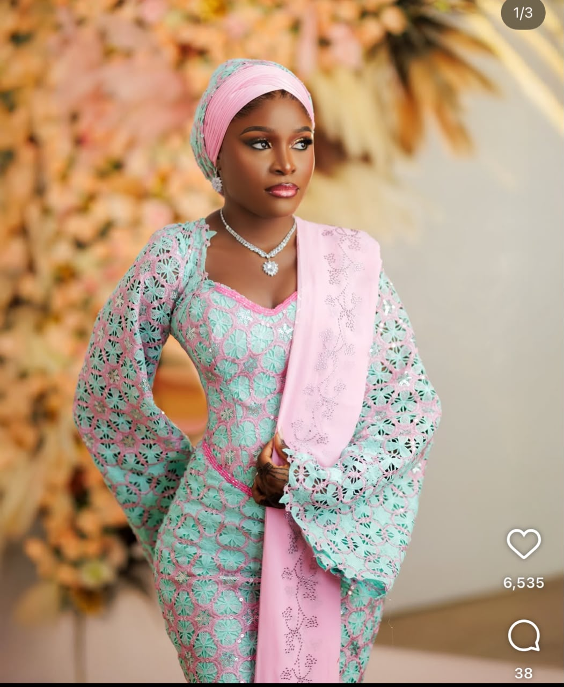
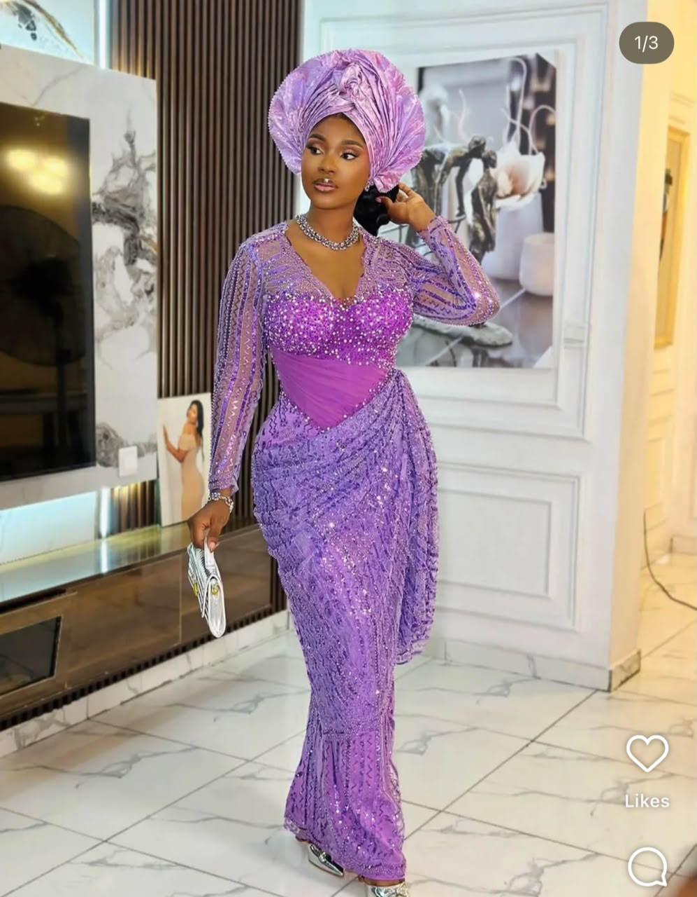
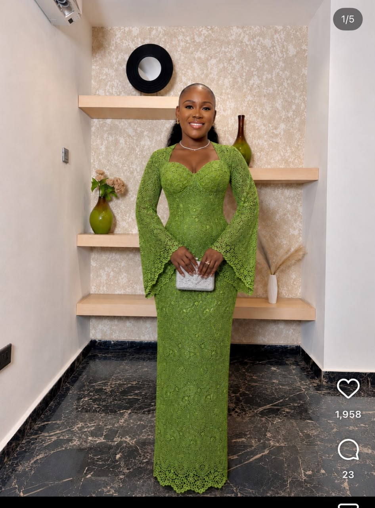
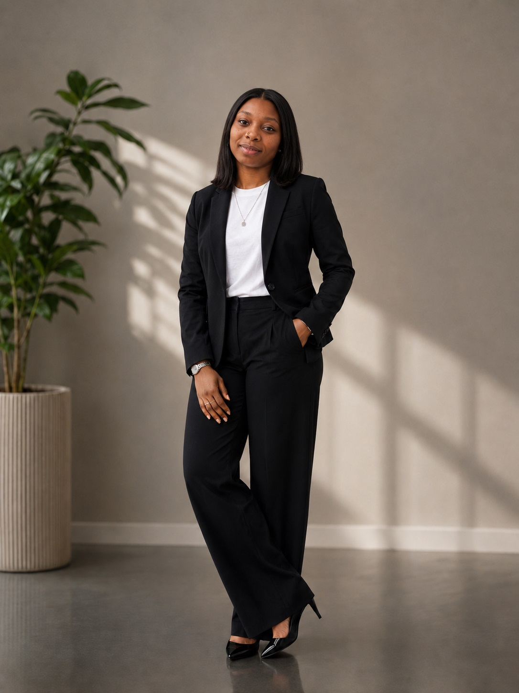
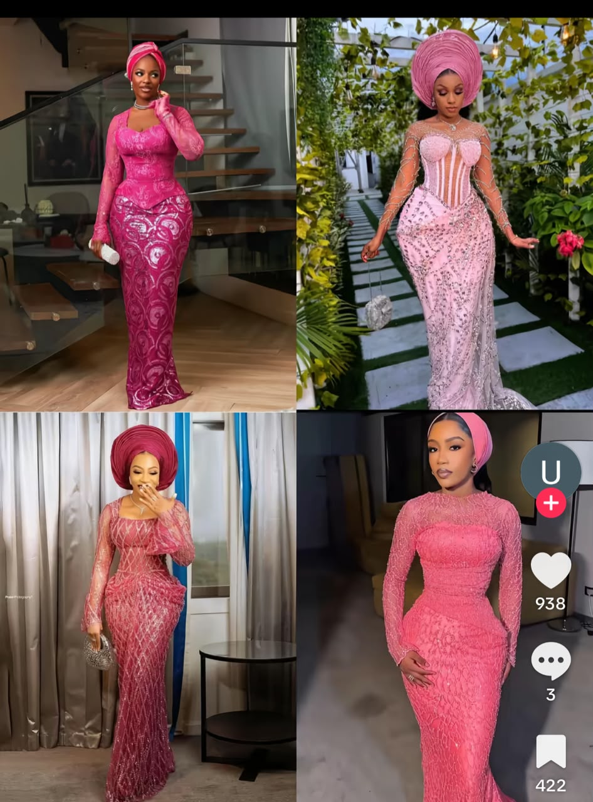
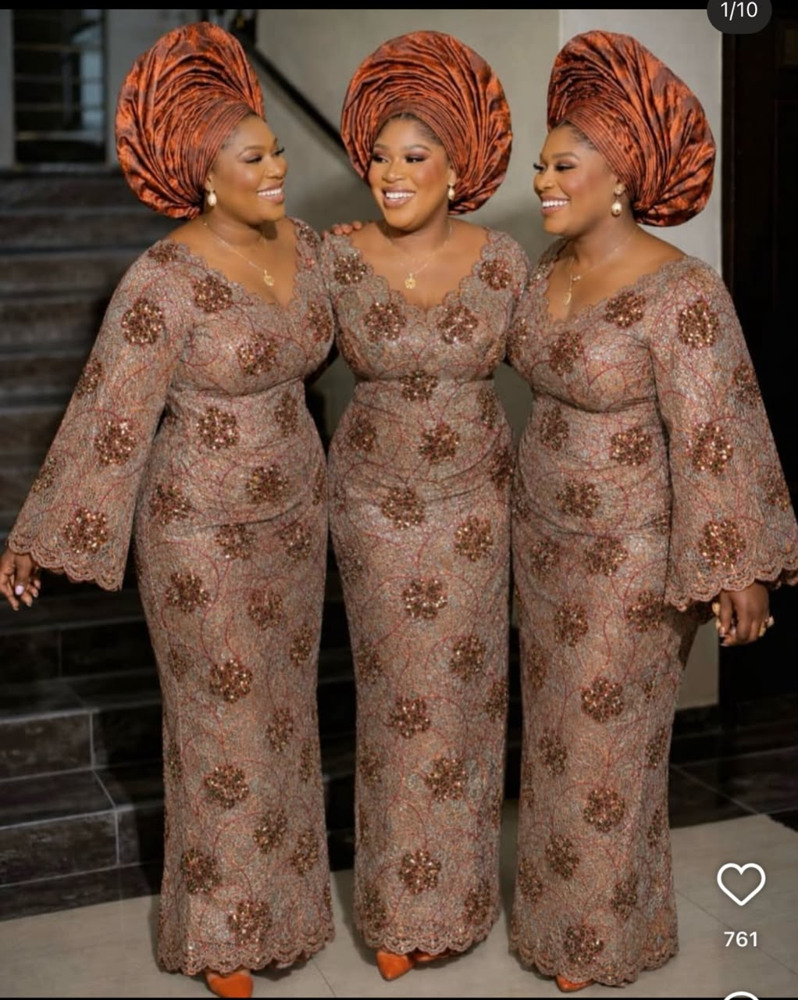
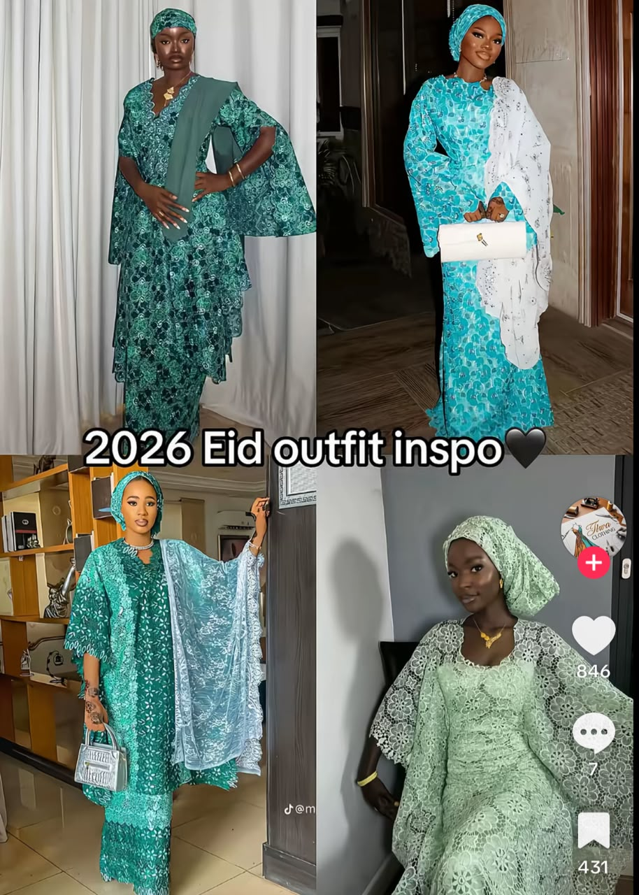
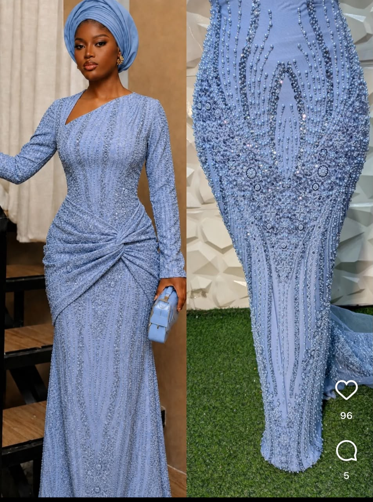
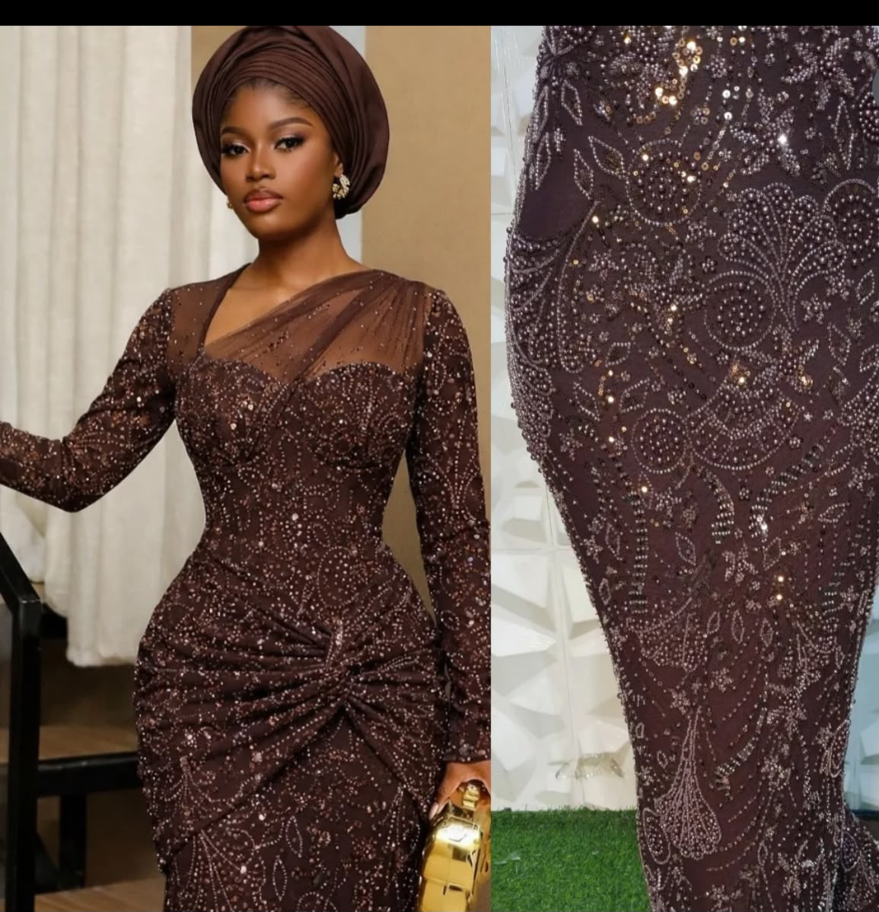
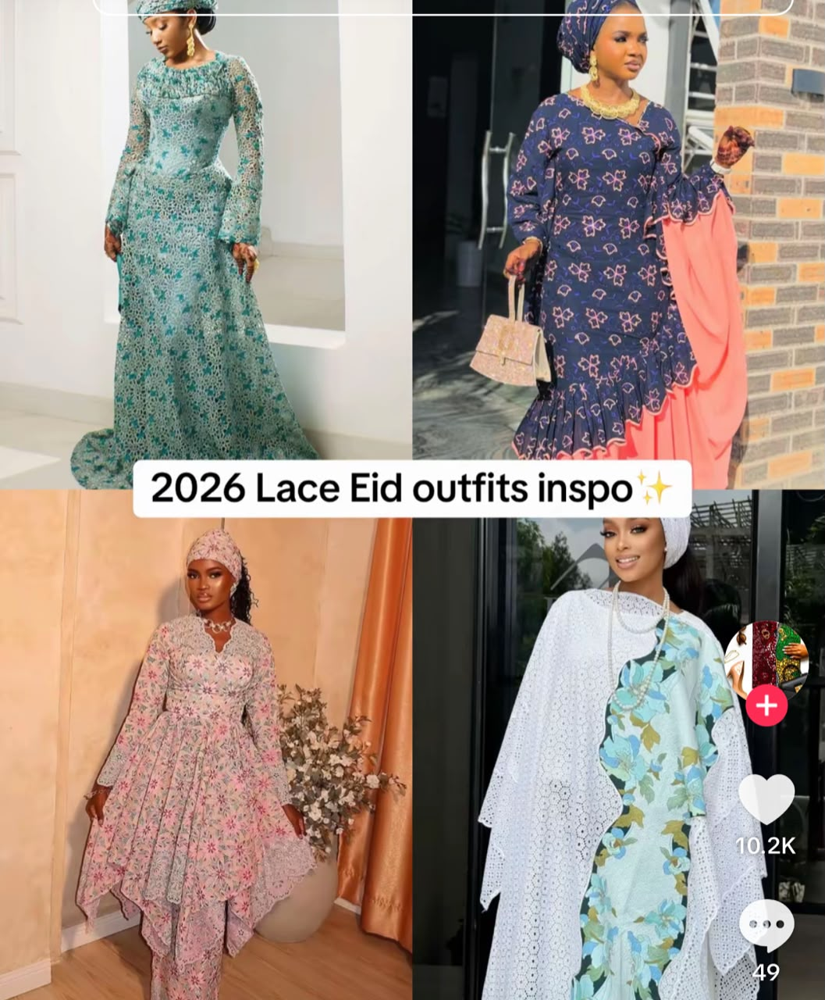

Where ancestral storytelling meets contemporary couture. Assurance by Jummy tailors high-fashion bespoke luxury with meticulous Nigerian craftsmanship and global aesthetics.




Years of
Couture
An innovative fashion designer and Creative Director, Jumoke has dedicated over a decade to reshaping the landscape of contemporary African luxury. Under her visionary label, Assurance by Jummy, she synthesizes cultural storytelling with structural modernism.
Her works proudly grace elite runways, including Lagos Fashion Week and GTBank Fashion Weekend, representing the rich design lineage of Nigerian culture. With a deep passion for sustainability and heritage textile preservation, Jumoke creates luxury womenswear designed to empower the modern global woman.
Collections
Showcases
Artisans
Curating conceptual runway visuals, editorial fashion shoots, styling architectures, and unique structural silhouettes that reflect high-fashion design values.
Combining classical draping with geometric block drafting to ensure flawless garment structures that accentuate natural forms comfortably.
Translating conceptual narratives into cohesive ready-to-wear and luxury couture capsules, managing fabric workflows from sketch to final stitch.
Elevating Assurance by Jummy into a leading digital luxury presence, utilizing visual marketing systems and building global client relationships.
Pioneering the modern application of ancient local textiles, blending Aso Oke, Ankara, and premium silks with modern luxury fabrics.
Coordinating major backstage wardrobes, orchestrating runway logistics, and aligning design teams under tight showcase deadlines.






Established our luxury fashion label. Designed and released 8+ distinct seasonal collections featuring refined structural cuts and luxury African textiles. Directed and trained creative designer lines and tailor houses.
Contributed to fabric selection patterns, backstage runway preparations, and lookbook styling. Assisted on global editorial collections showcased at international design weeks.
Conducted extensive local textile exploration on traditional Nigerian dyeing arts. Gained hand-craftsmanship skills in tailoring and heritage structural patterns.
Download the complete professional resume of Jumoke Adijat Kolawole to review her fashion accreditations, creative timeline, and industrial contributions.
Download Resume (CV) downloadWhether you require a bespoke custom wedding gown, specialized Aso-Ebi designs, or want to discuss creative consulting collaborations, write to us.
info@assurancebyjummy.com.ng
+44 07389079785
Wolverhampton, UK